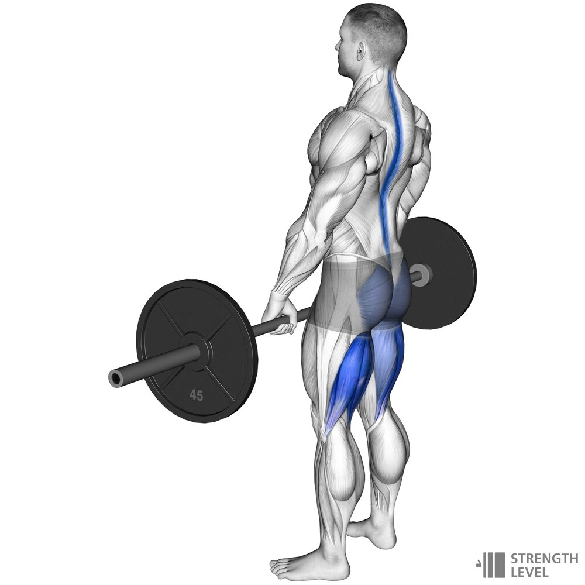
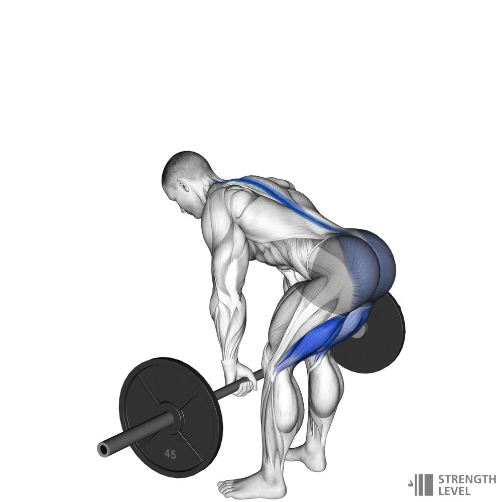
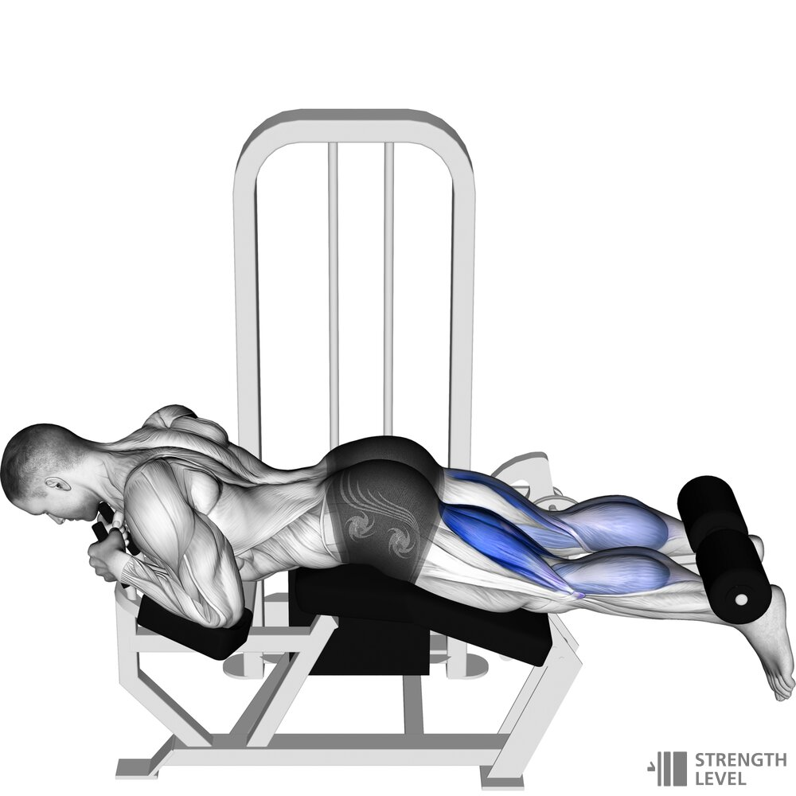
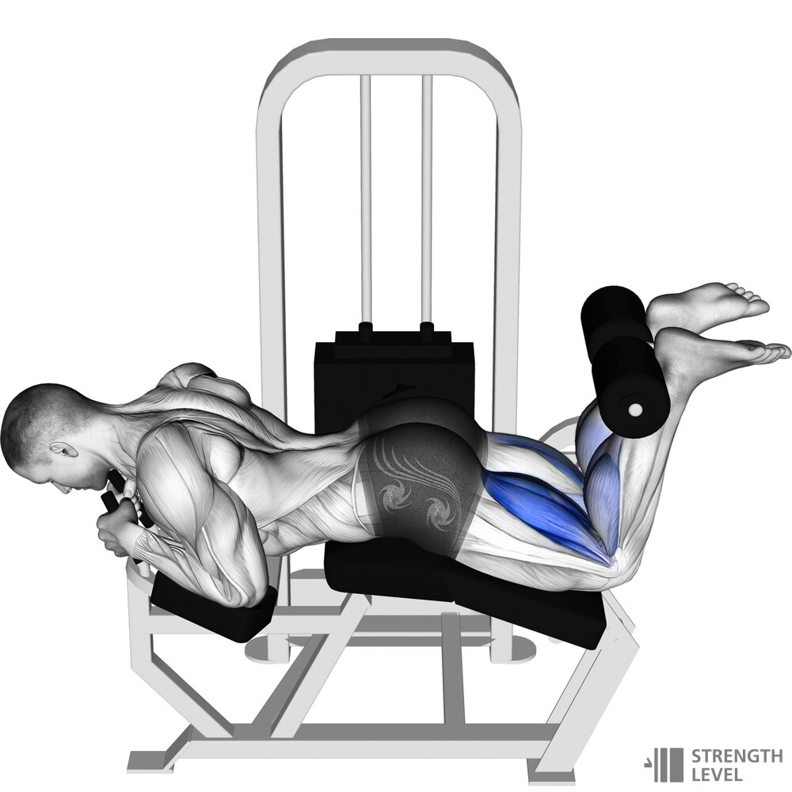

1.Rumuński martwy ciąg
 
1.Begin with the barbell on the floor or on a rack
2.Grip the barbell with a hook or overhand grip
3.Stand vertically with the barbell after using a conventional deadlift to get it off the floor,
alternatively lift from a rack at knee/hip height and take two small steps back
4.Lower the bar below the knees by reversing your backside with your knees slightly bent,
shoulders over the bar, holding tension on your hamstrings/glutes
5.Activate the posterior chain to lift the bar off the floor
6.Clench your glutes and stand up straight, allowing the bar to travel vertically
2.Zgięcia kolan w pozycji leżącej
 
1.Set up the seat, footrest and weight
2.Lie face-first on the leg curl machine
3.Ready your feet behind the footrest
4.Pull equally with both legs until your legs are at least 90 degrees
5.Return the legs to the start, stopping before the weight stack hits the bottom